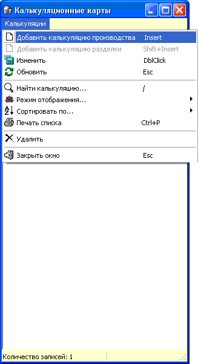

Данный справочник
позволяет создавать и редактировать калькуляционные карты блюд, которые
готовятся в цехах магазина.
Калькуляционная карта - это список ингредиентов и
их количеств, необходимых для приготовления 1 единицы блюда (1 порции, если
получаемое блюдо будет продаваться поштучно или 1 кг, если блюдо будет
продаваться на развес).
Калькуляционные карты могут использоваться при
составлении актов производства. Более подробно
это будет рассмотрено в соответствующем разделе справки.